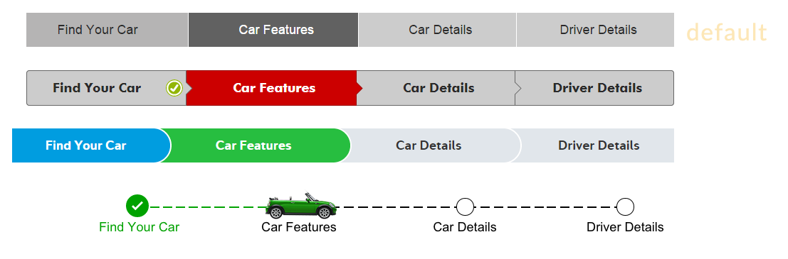
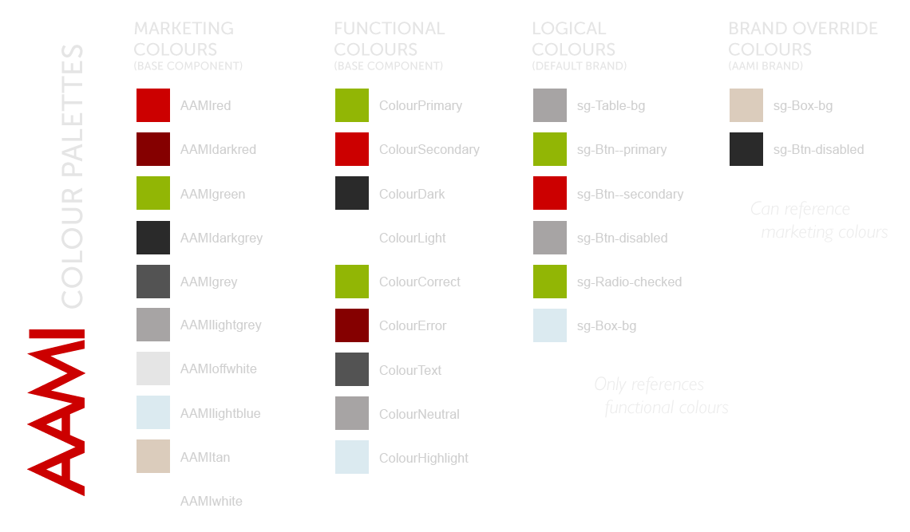
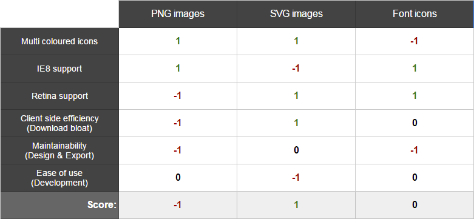
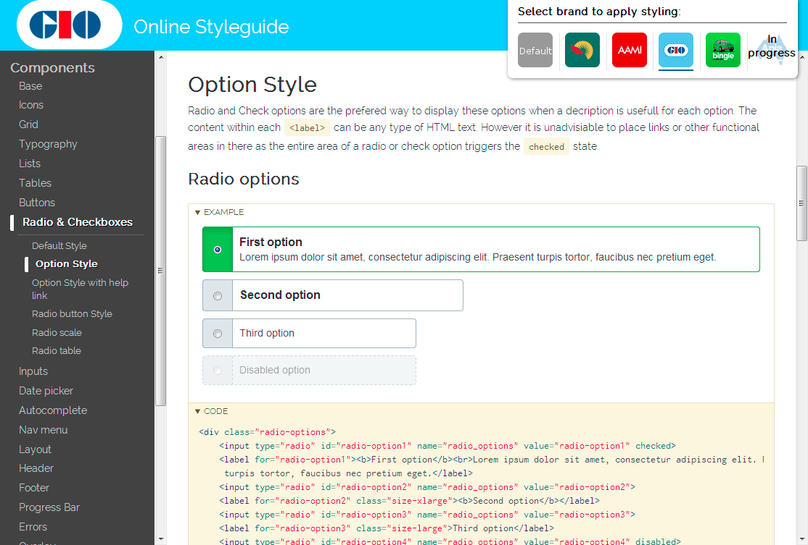

Multi-Branded Styleguides
Learnings on constructing a multi-theme Styleguide
About Me
User Experience and Front-end Designer, 10+ years
About Suncorp Group
Suncorp Group includes leading general insurance, banking, life insurance and superannuation brands in Australia and New Zealand
The Styleguide covers Personal, Commercial and Life insurance Web applications, Self service application and Websites.
What is a front-end Styleguide?
A reusable library of front-end components;
such as buttons, tables or grids, that are managed separately to any specific website or app.
Requirements
@
Suncorp
Support multiple brands
Support multiple platforms
Support teams using both
LESS and SASS

All components fluid and responsive
But can we turn it off for now?
IE8+ browser support
Each project needs only specific components and can only update to new Styleguide features when they have resources
(See Randeep's Tooling Presentation)
Constructing
Multi-brand
How to construct components?
Bower & Semantic versioning
| Base 2.1.3 | Icons 1.4.5 | Grid 1.0.2 |
| Typography 1.6.2 | Buttons 1.1.3 | Inputs 1.3.2 |
| Radio/Check 1.2.5 | Header 1.3.3 | Toggle 1.0.1 |
| Layout 2.1.4 | Modal 1.1.0 | etc... |
Default brand and brand layers
Default → Brand → Per site customisation
Colours
LESS overrides allow easy changes
OOCSS & SUITS naming, our way...
- Preprocessor agnostic (Solves our LESS vs SASS problem)
-
.[prefix]-[Component]-[elements]--[variant]
eg..sg-Table-head--data - Object Oriented CSS (OOCSS) reduces specificity
- Minimise cascade to ensure styling doesn't contaminate
-
Styling native tags (eg.
<ul>) only in optional file
Icons
SVG vs Fonts vs PNGs
Managing icons is tricky
Icons are subjective!!!
Which one of these represents: "My policy list"?
Icon colours: Functional Colours + Default
Icon naming: Icon-help--primary
Icons per component: Only the ones they need!
Grunticon
Generates Icons as SVG dataURI CSS classes
background-image: url('data:image/jpg;base64,/9j/4AAQSkZ JRgABAQAAAQABAAD/4QA2RXhpZgAASUkqAAgAAAABADIBAgAUAAAAGgAAAAAAAAAyMDEy IDEyOjM3OjU1AP/iAkBJQ0NfUFJPRklMRQABAQAAAjBBREJFAhAAAG1udHJSR0IgWFlaI wAAAAAAAGFjc3BBUFBMAAAAAG5vbmUAAAAAAAAAAAAAAAAAAAABAAD21gABAAAAANMtQU AAAAAAAAAAAAAAAAAAAAAAAAAAAAAACmNwcnQAA');
Auto generate PNGs for IE8 - with exact same class name
Documentation
KSS documentation vs manual Markdown
Visual Testing
Automated diffing from documentation examples
THE END